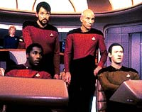
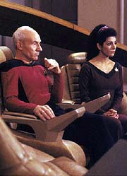
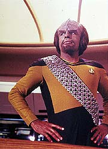
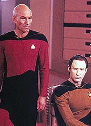
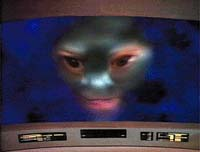

|
MANCHETE
DO EPISÓDIO
Tripulação
da Enterprise vira rato de
laboratório em episódio nada inspirado
Episódio
anterior | Próximo
episódio
Sinopse:
Data Estelar: 42193.6.
A Enterprise está a caminho do Quadrante Morgana quando é
"engolida" por um misterioso "buraco"
adimensional, livre de qualquer tipo de matéria ou energia. Picard
fica perplexo com as misteriosas propriedades do fenômeno, que mal
pode ser definido em termos humanos.
Incapaz de escapar, a Enterprise logo encontra uma nave Romulana
dentro do "buraco". Após sofrer um ataque dos Romulanos,
Picard ordena que Worf retorne fogo, e a nave inimiga é destruída
facilmente --fácil demais para ser verdade.
 Logo
em seguida, Picard e sua tripulação deparam com outra nave da
Federação, a USS Yamato (uma nave-irmã da Enterprise, também da
classe Galaxy). Riker e Worf decidem investigar. A bordo da nave, os
oficiais são confundidos por uma série de estranhos acidentes, mas
conseguem retornar com segurança à Enterprise.
A tripulação é então confrontada por um olho humano gigante que
a observa por meio da tela principal da ponte. O ser, Nagilum,
explica que está usando a Enterprise para realizar experimentos
sobre os humanos --e seu próximo teste consiste em descobrir como
seres humanos morrem. Para observar todas as formas possíveis de
morte, Nagilum pretende destruir de um terço a metade da tripulação
da Enterprise.
Considerando inaceitável permitir que Nagilum extermine metade de
sua tripulação, Picard decide, com o apoio de Riker, iniciar o
sistema de auto-destruição da Enterprise --em 20 minutos, a nave e
toda a sua tripulação será destruída.
 Conforme
o tempo passa, Troi e Data visitam o capitão em seus aposentos,
pedindo para que ele cancele a ordem. Surpreso com a atitude de seus
oficiais, Picard descobre que trata-se de mais uma ilusão criada
por Nagilum para evitar que o capitão elimine a chance de continuar
com seus experimentos.
Após ter sua última cartada eliminada, a criatura decide deixar
que a Enterprise parta. Nagilum trava ainda um último diálogo com
Picard, em que ele revela ter observado a tripulação o suficiente
para entender a natureza humana, e o capitão aponta que as duas espécies
compartilham ao menos de uma característica: curiosidade.
Comentários:
"Where
Silence Has Lease" é um episódio sonolento. Por mais que
seja interessante o conceito de que não somos os únicos
exploradores no Universo e de que as técnicas empregadas por alienígenas
para nos estudar não sejam tão agradáveis ou tão compatíveis
com nossos valores morais quanto gostaríamos, a verdade é que o
segmento não consegue se aproveitar dessa potencialidade.
 Perde-se
muito tempo sem que nada aconteça e o roteiro se utiliza de artifícios
absurdos (para não dizer falsários) para tentar introduzir
adrenalina ao episódio (como a aparição da nave Romulana e o
corte nas comunicações da nave apenas durante o intervalo
comercial). Como era de se esperar, o telespectador se sente
enganado, e surge até uma revolta pelos truques baixos.
Mas ninguém tem tanto direito a se revoltar com esse episódio
quanto Worf. O personagem é totalmente pisoteado ao longo dos 46
minutos. Começa como um animal fora de controle, louco para encher
o comandante Riker de pancada no holodeck, passa por um covarde
quando a nave encontra o vazio no espaço e ele fica lembrando de
antigas lendas Klingons sobre uma criatura que engolia naves
inteiras e termina como um idiota na USS Yamato, confuso pelo número
de pontes e de Rikers. Patético.
 Troi,
para variar, sofre com a (falta de) caracterização. Sua única
participação relevante foi explicar o porquê de não ter sentido
Nagilum desde o momento que encontraram a anomalia. A picuinha entre
a doutora Pulaski e Data parece fora de contexto e está mal
utilizada.
Apenas Picard tem alguma coisa a ganhar deste roteiro,
principalmente com o modo decidido pelo qual decidiu pôr fim aos
experimentos de Nagilum destruindo a Enterprise (e é difícil
acreditar que tudo não tenha passado de um blefe) e com seu
discurso sobre as crenças humanas (e pessoais dele) sobre vida após
a morte.
Em termos de narrativa, o episódio é um marasmo absoluto até a
metade, mas ganha algum fôlego a partir do momento em que Nagilum
se revela à tripulação: a partir dali a história pelo menos começa
a se desenrolar. Mas nada que chegue a trazer muita empolgação.
O andamento às vezes é tão previsível que chega a dar pena. De
um momento para outro, Wesley não está mais pilotando a nave,
dando lugar a Haskell, um tripulante nunca antes visto. Adivinha se
ele vai morrer um ou dois atos depois? As únicas vezes em que o
roteiro consegue ser surpreendente são os casos em que ele não faz
o menor sentido --o que não é uma grande vantagem.
 Apenas
os bons efeitos especiais e a direção competente de Winrich Kolbe,
somado ao genuíno espírito de exploração e curiosidade que
permeiam as atitudes da tripulação da Enterprise, salvam esse episódio
de ser um fiasco total, retirando-o da lista dos que não merecem
sequer uma reprise. Mas seguramente poderia ter sido bem melhor...
Citações:
Data - "Captain,
sensors show nothing out there. Absolutely nothing."
("Capitão, os sensores não mostram nada lá. Absolutamente
nada.")
La Forge - "Sure is a damn ugly 'nothing'."
("Com certeza é um 'nada' bem feio.")
Nagilum - "I understand. The masculine and the feminine."
("Eu entendo. O masculino e o feminino.")
Picard - "It is the way in which we propagate our species."
("É o modo pelo qual propagamos nossa espécie.")
Nagilum - "Please, demonstrate how it is accomplished."
("Por favor, demonstre como isso é feito.")
Pulaski - "Not likely."
("Não mesmo.")
Nagilum - "To understand death, I must amass information on
every aspect of it. Every kind of dying. The experiments shouldn't
take more than a third of your crew, maybe half."
("Para entender a morte, preciso acumular informações sobre
todos os seus aspectos. Todo tipo de morte. Os experimentos não
tomariam mais que um terço de sua tripulação, talvez
metade.")
Riker - "And ensign, if you encounter any holes... steer
clear."
("E alferes, se você encontrar algum buraco... passe
reto.")
Trivia:
 Segundo o diretor Winrich Kolbe, o nome do alienígena Nagilum é
Mulligan lido de trás para frente. O motivo? O ator Richard
Mulligan foi a primeira opção para atuar neste papel.
Segundo o diretor Winrich Kolbe, o nome do alienígena Nagilum é
Mulligan lido de trás para frente. O motivo? O ator Richard
Mulligan foi a primeira opção para atuar neste papel.
Neste episódio a USS Yamato tem o número de registro 1305-E. Em um
erro de continuidade, nove episódios depois, em "Contagion",
o número de registro desta mesma nave foi alterado sem mais explicações
para 71807.
Ficha
técnica:
Escrito por Jack B. Sowards
Direção de Winrich Kolbe
Exibido em 28/11/1988
Produção: 028
Elenco:
Patrick Stewart como
Jean-Luc Picard
Jonathan Frakes como William Thomas Riker
Brent Spiner como Data
LeVar Burton como Geordi La Forge
Michael Dorn como Worf
Marina Sirtis como Deanna Troi
Wil Wheaton como Wesley Crusher
Elenco convidado:
Diana Muldaur como
Katherine "Kate" Pulaski
Earl Boen como Nagilum
Colm Meaney como Miles Edward O'Brien
Charles Douglass como alferes Haskell
Episódio
anterior | Próximo
episódio
|